Earlier work · Brand and web · 2022
Remnant Labs: redesigning a game studio's web presence
Remnant Labs is a fantasy-anime universe with multiple interoperable titles. As lead front-end developer I ran the complete overhaul of the studio's website, from audience research and brand voice through wireframes, hi-fi prototypes, and the Vue front end that shipped.
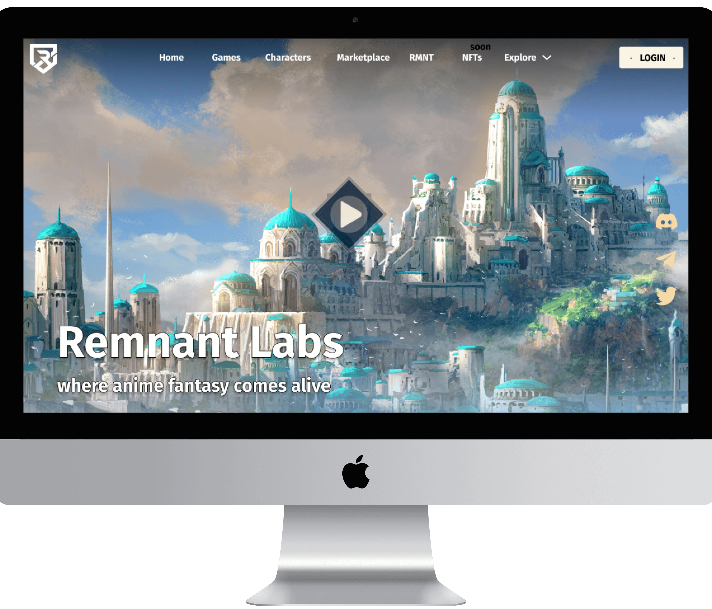
Research
I began with the genre: who plays fantasy-anime strategy games, what competing studios sound like, and where a new brand could stand apart. Working with the team we set a brand foundation:
- Brand voice. Graphics heavily influenced by Japanese anime, a whimsical tone, a bright and adventurous atmosphere.
- Audience. Casual and strategy players, teens and young adults in North America, Japan, China, and Korea.
- Tone. A casual role-playing voice across the site and in-game text, used whenever developers and game masters speak to players.
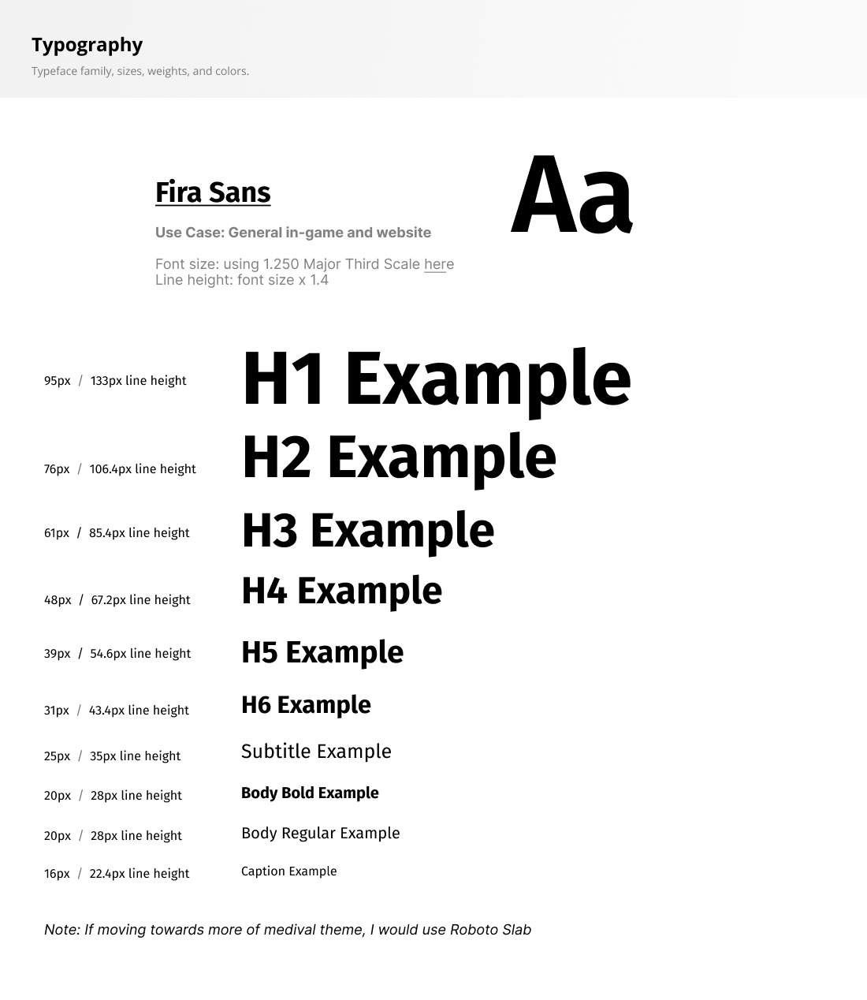
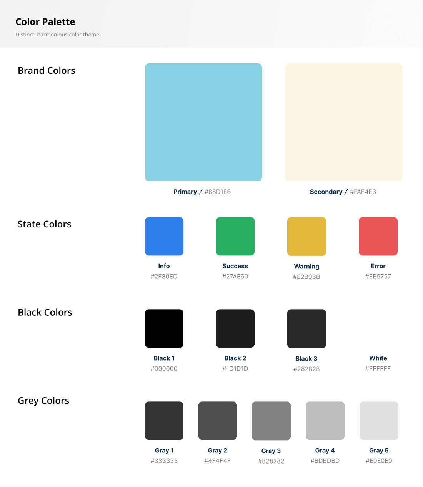
Prototyping
Low-fidelity wireframes first, so we could test and iterate layouts quickly with the team and stakeholders before committing to visual design.
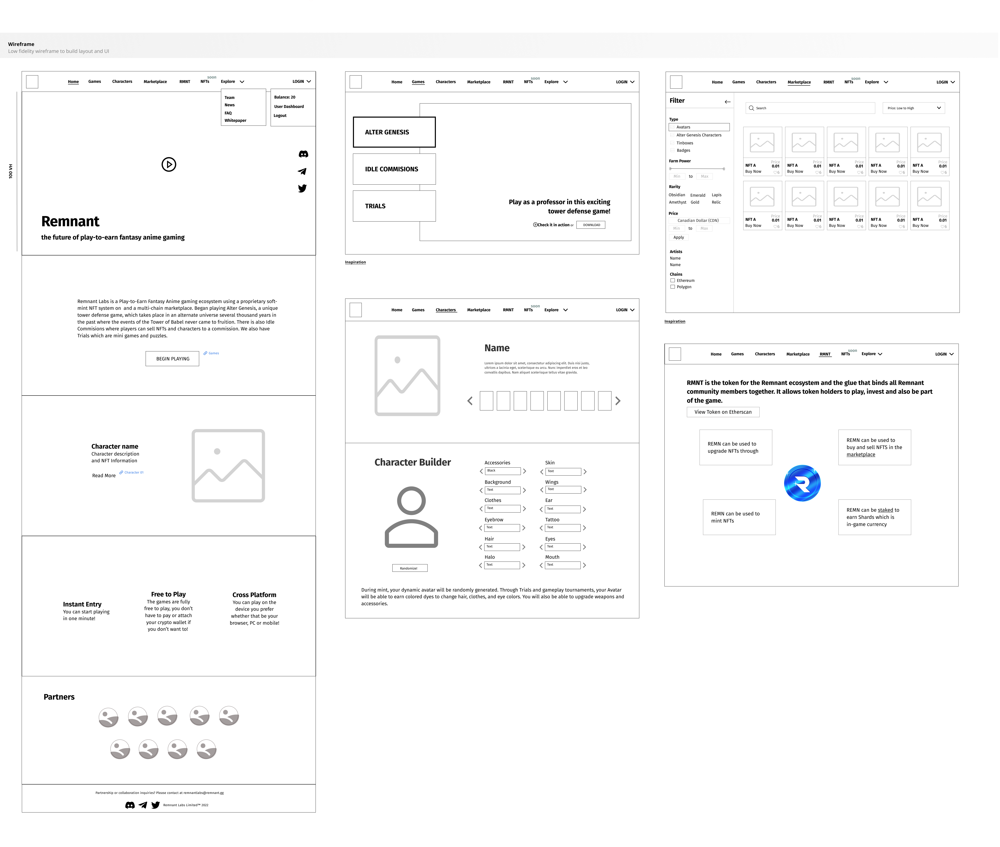
Homepage
A transparent navigation system as a road map to the site, with the number of options deliberately kept small (Hick's law) for fast decisions. A trailer video on the homepage to show the game's graphics and concept, and a prominent call to action beside a clear brand description.
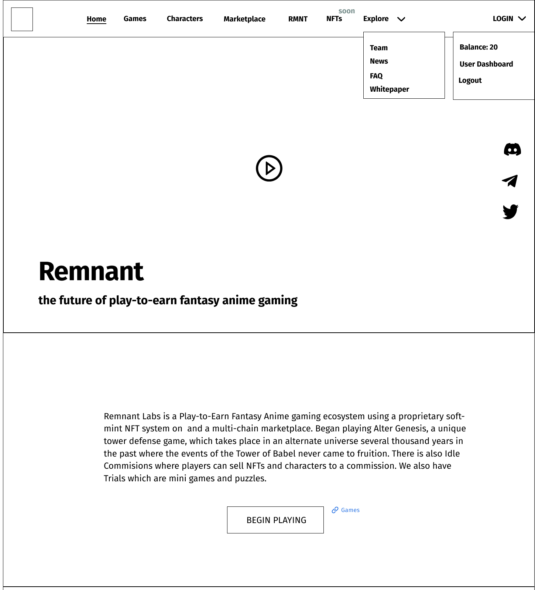
Games page
I proposed and designed a games page showcasing the whole Remnant ecosystem so players could browse between titles.
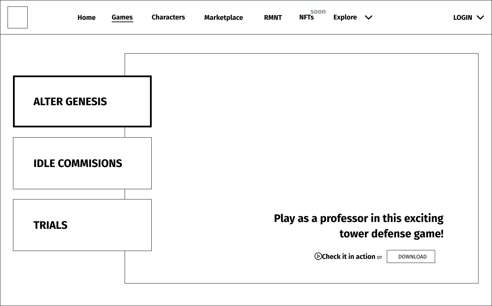
Implementation
Character card components
Character cards are central to the game, so I built three interactive versions to explore how avatars and descriptions could be presented.
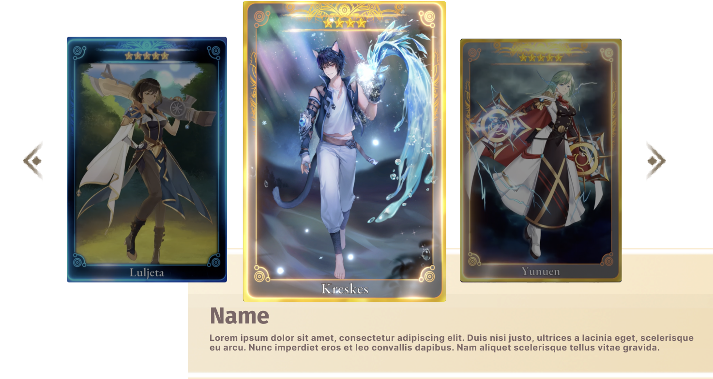
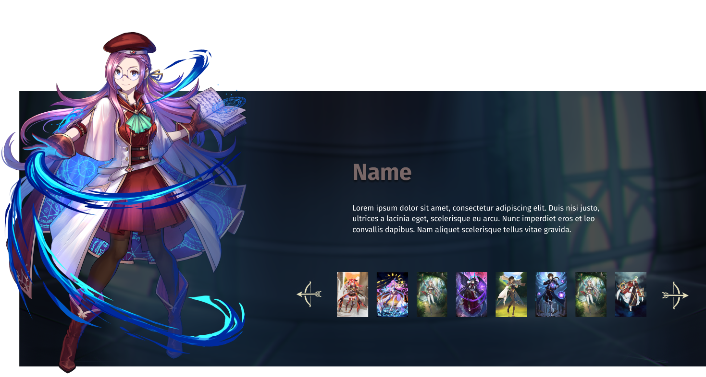
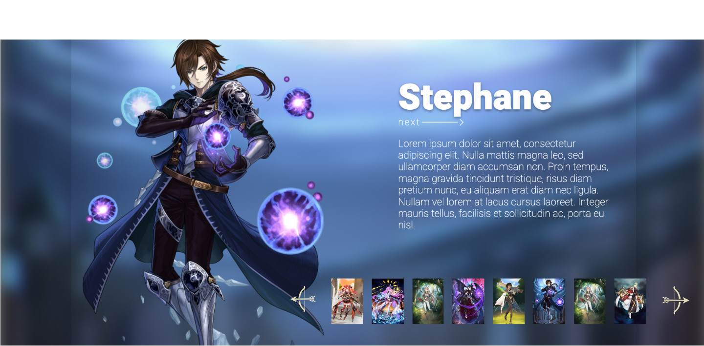
Results
Engagement and conversion rose after launch. Simplified navigation, the new games page, and matching the site to the game's own art made it feel like part of the game. Web traffic went up 125%.
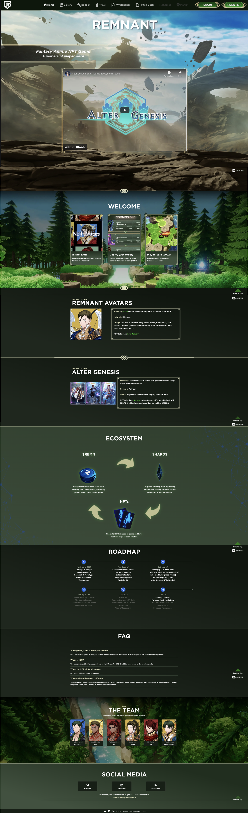
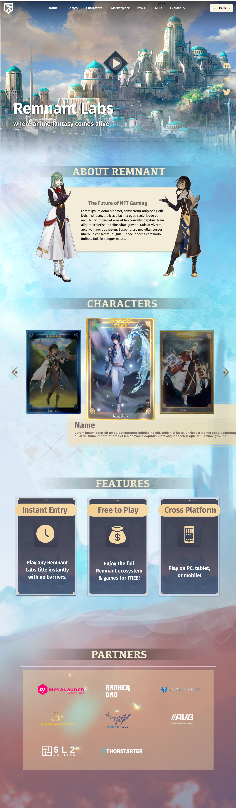